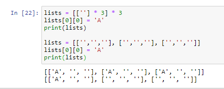

שאלה:
מדוע זה קורה ?

פנה למחברת 3.5 
כאילו הפעולה של ההכפלה מייצרת בעצם את אותה הרשימה שמצביעה לאותו מקום ?
יאפ 
יש דרך מהירה (לא דרך לולאות) ליצור רשימה של רשימות ריקות בלי להגיע לכפילות הזו ?
אני לא מאמין שבזבזתי על זה כמעט שעה
יכול להיות רלוונטי באותו הקשר
את צריכה להחזיר אחורה אתה הסמן כדי שיקרא שוב את כל הקובץ מהתחלה לפני הקריאה השניה:
popular_words.seek(0)
בדוגמה שהדבקת פה בשורה הראשונה הוא קורא רק את השורה הראשוה, הסמן נשאר בסוף של שורה זו ולאחר מכן הוא קורא את שאר הקובץ עם READ. אין פה החזרה אחורה של הסמן כמו ש- @linoy רוצה.
להבנתי אפשר פשוט ליצור את הקבצים ידנית באקסל, רק את האיחוד ויצירת הקובץ השלישי החדש צריך לעשות בקוד
2 לייקים
היי,
האם ב csv יש חשיבות לסדר השורות בקובץ התוצר, למעט שמירה על השורה הראשונה כשמות העמודות?
תודה
כן, ישנה חשיבות לסדר השורות
אוקי, האם צריך לשמור על הסדר המקורי ופשוט ״לחבר״?
לסדר לפי משהו אחר?
שים לב שבדוגמה שלך סדר השורות של הקובץ הראשון מתהפך (ולכן השאלה)
לא ראיתי איפה בדוגמה סדר השורות מתהפך ^^
כן, מה שאמרת
בקובץ 1 הid הראשון הוא a ואחריו 1
באחוד זה הפוך (תמונה מטה לנוחיותך)
מתנצלת על הקטנוניות, (ועל שאלת הקיטבג), רק מוודאת:
אם יש לי id שמופיע בשני הקבצים, אני יכולה להחליט לפי הסדר של איזה מהם אני הולכת?
לדוג׳:
id-ים של קובץ 1:
1
2
3
id-ים של קובץ 2:
5
1
4
id-ים של קובץ תוצר: (בחרתי לפי הקובץ הראשון)
1
2
3
5
4
אופציה ב׳:
5
1
4
2
3
{kind=link}
לייק 1
{kind=link}
כן, אין בעיה שתחליטי על איזה סדר ללכת במקרה כזה
לייק 1
היי ים!
שאלונת…נתקלתי בזה בתרגיל csv. מקווה שזה בסדר לשאול, כי זו שאלה כללית שאני לא בטוחה שיש לנו את הכלים לפתור כרגע (או בכלל?). אם זה קשור ספציפית לתרגיל אז תתעלם מהשאלה עד לאחר שעת ההגשה
שמתי לב שכשאני יוצרת תתי רשימות שכל התאים הינם רווח, אז כשאני רוצה לבצע השמה אני רואה שקורה דבר מוזר - ההשמה מתבצעת בכל תתי הרשימות מהסוג הזה באותו אינדקס…למרות שלא ביקשתי…
זה באג בפייתון?
לא הפרטים על למה זה קורה מופיעים במחברת 5 של שבוע 3
ממ אבל אני לא מצביעה לאותו זכרון (העתקתי בכל מעבר כמו שלמדנו)
בטוחה שהעתקת?
נסי לעקוב עם pythontutor